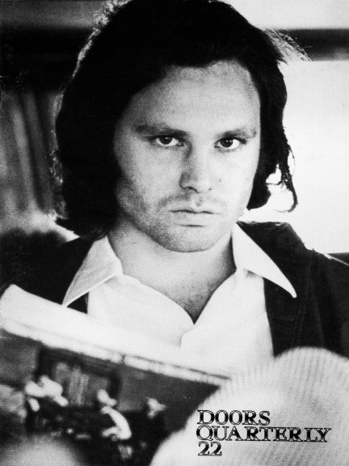

| |

Depending
on your computer's safety settings (antivirus, firewall,
etc.)
the download may generate a standard warning, that is
because the
magazine is a flipbook in the .EXE file format. We
guarantee that
the file is absolutely harmless
and perfectly safe. |
|

A new
window will open with the magazine for you to read online
without the need to download it onto your computer.
Again, we guarantee that it's absolutely
harmless
and perfectly safe. |
|
| |
 |
|
The Doors Quarterly Magazine #22 was
published on January 20, 1990, more than
a year before Oliver Stone’s Doors movie would hit
the cinemas. Working title until
then was “Riders on the Storm,” and you can
imagine that John Densmore was not
amused - he was about to publish his book using the same
title. They dropped Tom
Cruise, John Travolta and Dave Brock (singer with the
tribute band “Wild Child”) for
the role of Jim Morrison ... at the time of DQ 22, Val
Kilmer had already been chosen
and he was busy listening to the Miami tape I sent him (I
guess he also read the few
Quarterlies I added to the parcel with his Miami
cassette).
No wonder (after DQ’s usual page full of news and
rumors) the main article in DQ 22
is about the history of The Doors’ movie: “Back
to the Sixties, Darkly,” taken from
the Los Angeles Times (January 7, 1990).
No CD reviews in this DQ? Bootleg CDs were rare those
days, so I had to concentrate
on just one vinyl bootleg, “Someday Soon.” I
like the following (pretty accurate)
transcription of “People Are Strange,” followed
by the preview for a German movie
(in black & white, 1989) made for TV called “Der
König der Eidechsen” (the story of two
Doors fans who decide to take a new bust to Jim’s
grave after they read the news in DQ
Magazine that the previous sculpture had been stolen.)
Part two of a full-length interview by Ko Lankester with
Patricia Kennealy-Morrison is
next. I am still amazed - both had never met, but did the
interview by letters (NO - there
weren’t any emails at that time!). Next are some fan
letters and the final part of my big
Robby Krieger interview (Los Angeles, 1988) plus a
reprint of Richard Goldstein’s great
article from New York Magazine, August 5, 1968.
There wasn’t the usual free poster with this issue,
subscribers got a fine golden
bumper sticker instead.
Enjoy your digital version and let us know what you think
... we will continue soon by
publishing a digital version of DQ21.
CU and have fun!
Thanks to Kevin Chiotis for all of his work!
A splendid time is guaranteed for all!
Rainer Moddemann.
And don’t forget:
Please note that your digital copy of The Doors Quarterly
Magazine 22 hasn't been
altered in any way. You get it as it was published on
January 20, 1990 (!). Be aware
that all addresses (private, phone) are no longer valid.
Books, CDs or posters and other
stuff might not be available anymore. Please do not
respond to any of the small ads or
blame anyone for incorrect details - all writers just did
the best they could back in
1989/’90. And all this happened without any emails
and without the internet.
Thank you!
Rainer Moddemann.
|
|